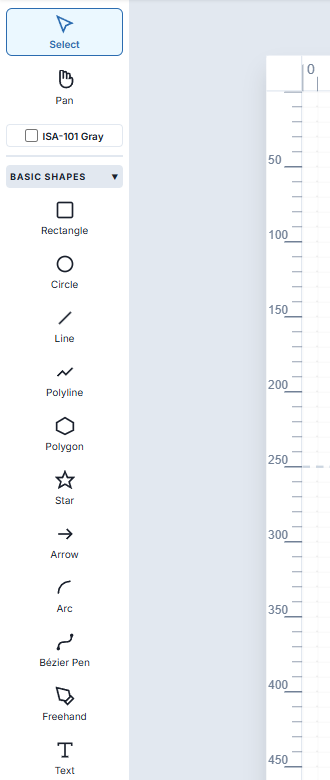
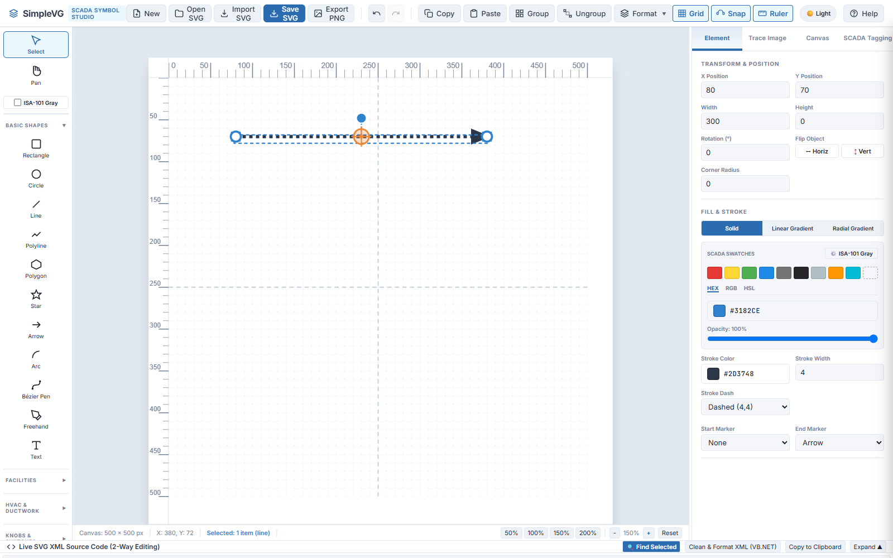
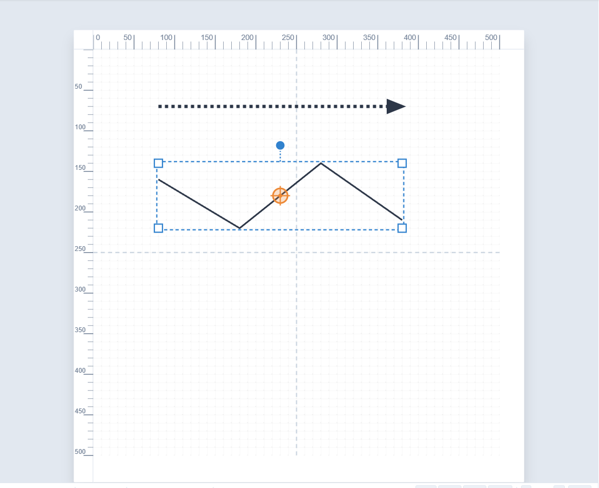
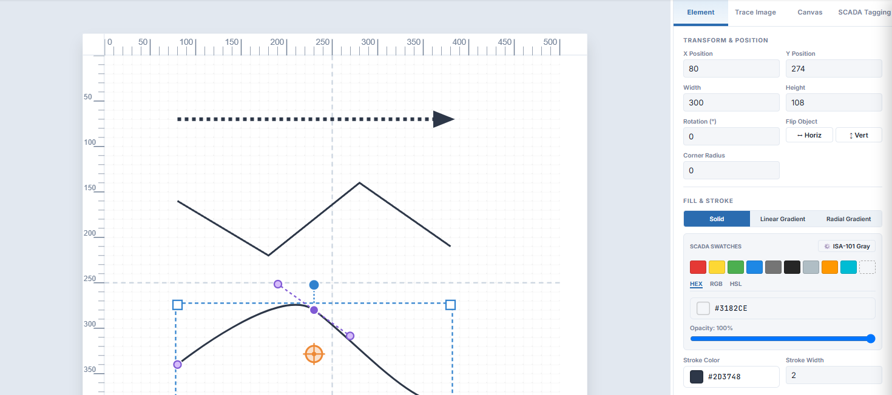

SimpleVG › Tutorial › Chapter 6
Pipework, flow arrows, outlines and leader lines are all made of lines. SimpleVG gives you several tools for them, all in the BASIC SHAPES section of the Toolbox.

Choose the Line tool (L), then press and drag across the canvas. With Snap on, the ends land on grid points, so a horizontal drag gives a perfectly level line.
With the line selected, the Inspector offers the line styling controls:

A polyline is a chain of straight segments, ideal for pipe runs and outlines. Choose the Polyline tool (P) and click once for each corner. To finish, double-click the last point, or press Enter.

The whole chain is one shape, so you can move it, colour it and give it markers as a single piece.
For smooth curves, use the Bézier Pen (B). Each point you place is a node:

Select the finished curve with the Select tool and its nodes and handles appear as purple dots. Drag a node to move that point, or drag a handle to change the curve. Tick Close Path Loop (Z) in the Inspector to join the end back to the start and make a closed shape you can fill.
The other drawing tools work the same way: Arc (A) draws a curved segment, and Freehand traces whatever your pointer does.
In the next chapter we make shapes look solid and realistic with gradient fills.